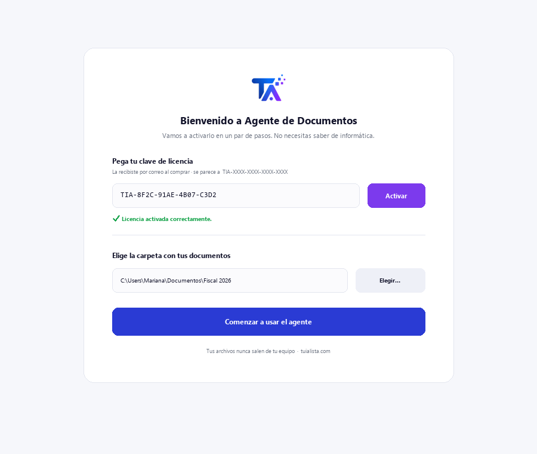
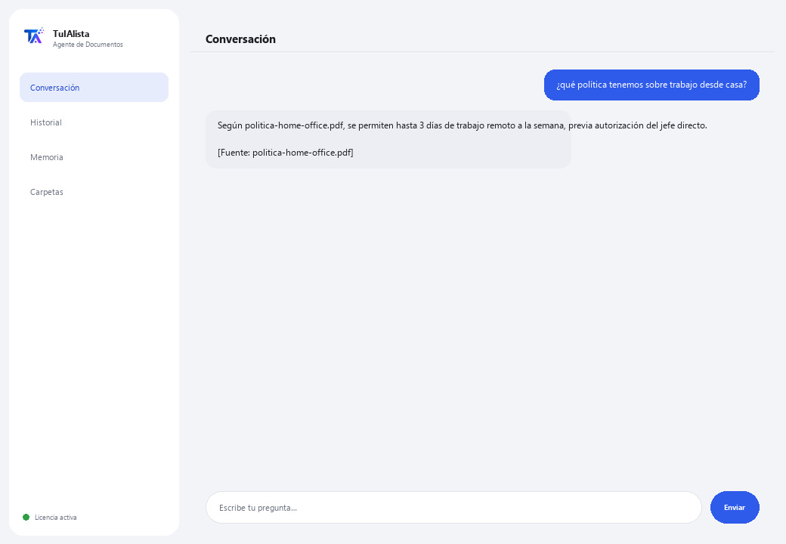

Agente de Documentos
Busca dentro de tus documentos por ti y te responde en lenguaje normal, citando de qué archivo salió la respuesta.
¿Qué resuelve y qué necesitas?
Toda empresa tiene carpetas llenas de contratos, manuales, expedientes, políticas y reportes... y cuando alguien necesita un dato, tiene que abrir archivo por archivo hasta encontrarlo. Este agente lee todo y responde tu pregunta directamente, citando el archivo exacto de donde salió el dato.
- Necesitas: tu clave de licencia (TIA-XXXX-XXXX-XXXX-XXXX) y la carpeta con tus documentos. Nada de Python ni conocimientos técnicos.
- Primer resultado en menos de 5 minutos: instalas, activas, eliges tu carpeta y le preguntas directamente lo que necesites saber — no hay comandos que aprender.
- Tus documentos nunca salen de tu computadora — la lectura e indexado corre localmente.
soporte@tuialista.com o entra a tuialista.com/soporte — normalmente respondemos el mismo día hábil.1 Qué hace este agente
Es el agente más simple del catálogo. Tú le señalas la carpeta donde guardas tus documentos y él:
- Los lee todos (PDF, Word, texto y Markdown), sin que tengas que abrirlos uno por uno.
- Responde tus preguntas en lenguaje normal: “¿qué dice el manual sobre las vacaciones?”
- Cita el archivo de donde sacó cada dato, para que puedas verificarlo.
- Si la respuesta no está en tus documentos, te lo dice en vez de inventar.
El resultado: encuentras cualquier dato en segundos, sin recordar en qué archivo estaba.
2 Instalación (2 minutos)
Para Windows. No hace falta internet permanente ni subir nada a la nube.
Baja el instalador desde tuialista.com/descargar (agente Documentos) y ábrelo. Crea un acceso directo en tu escritorio con el logo — no requiere Python ni terminal.
Doble clic al ícono nuevo. Pega tu clave de licencia (te llegó por correo al comprar) y pulsa Activar. Verás una palomita verde cuando sea válida.
Selecciona la carpeta con tus documentos y pulsa Comenzar a usar el agente. La próxima vez arranca directo — recuerda tu clave y tu carpeta.

3 Cómo usarlo
El agente abre una ventana de chat, como una app de mensajería — no es una pantalla negra de programador. Este es el agente más directo del catálogo: no tiene comandos que memorizar. Escribes tu pregunta con tus propias palabras en el cuadro de texto de abajo, pulsas Enviar (o Enter), y el agente busca la respuesta en tus documentos:

Si ningún documento contiene la información, el agente te lo dice claramente en lugar de inventar una respuesta — eso te ahorra seguir buscando en vano. Escribe salir (o exit) para terminar.
4 Ejemplos de uso común
Encontrar un dato sin abrir cada archivo
¿cuál es el procedimiento para dar de alta a un proveedor nuevo? — el agente busca en todos los documentos y te responde citando el archivo correcto.
Consultar una política de empresa
¿cuántos días de vacaciones corresponden al primer año?
Revisar un expediente
¿qué fecha de entrega quedó pactada en el expediente del proyecto Alfa?
Ubicar en qué documento está algo
¿en qué archivo se menciona la garantía del equipo de aire acondicionado? — el agente te dice en qué documento aparece, para que vayas directo a él.
5 Preguntas frecuentes
¿Mis documentos se suben a internet?
¿Necesito internet para usarlo?
¿Qué formatos de archivo acepta?
¿Puede leer un PDF escaneado?
¿En qué idioma me responde?
¿Cuántos documentos puede manejar?
¿Las respuestas son 100% exactas?
¿Puedo cambiar la carpeta de documentos?
¿Guarda un historial de mis preguntas?
¿Reemplaza a un buscador o gestor documental?
6 Solución de problemas
No lee un PDF / aparece “PDF no leído”
Dice “Licencia no válida” o pide reconectar
“No hay proveedores de IA configurados” al preguntar
Muestra “0 documentos indexados”
¿Ninguna de estas soluciones resolvió tu problema? Escríbenos directamente — con gusto lo revisamos contigo.
soporte@tuialista.com o entra a tuialista.com/soporte — normalmente respondemos el mismo día hábil.7 Privacidad y confidencialidad
Tus documentos nunca salen de tu computadora.
- El agente lee e indexa los archivos localmente, en tu propio equipo. No los sube a ningún servidor ni los comparte con nadie.
- La búsqueda y selección de los fragmentos relevantes ocurre en tu máquina.
- Lo único que viaja por internet es: (1) una comprobación de que tu licencia está activa — que no incluye el contenido de tus documentos —, y (2) al hacer una pregunta, se envía un fragmento de los documentos relevantes al motor de IA para redactar la respuesta.